Provence is a geographical region and historical province of south-eastern France, which extends from the left bank of the lower Rhône in the west to the Italian border in the east; it is bordered by the Mediterranean Sea to the south.
As well as a coastline packed with stunning beaches, Provence is also famous for its iconic lavendar fields. You will find many areas of natural beauty in this region, including lakes, mountains and waterfalls. Provence has many beautiful, quaint villages, as well as bustling cities. And, of course, the food is fantastic!
My Provence Highlights
Gorges du Verdon
The Gorges du Verdon is a river canyon that is often considered to be one of Europe's most beautiful. It is about 25 kilometres long and up to 700 metres deep.
TOP TIP: Make sure to call and reserve pedalos or canoes in advance if you are going during the summer holidays.
Villecroze Caves and Gardens
These caves were formed 700,000 years ago, at the end of the last local ice age. Surrounding them are gardens with a waterfall, picnic areas, a play park, and a river.
TOP TIP: Only children aged 6 and older are allowed inside the caves. Don't forget to wear comfortable, closed shoes.
Valensole Plateau
Drive through Valensole in June and July, and you'll see fields flooded with lavender. You can photograph the fields, meet the farmers, and buy products from lavendar soap to lavendar tea.
TOP TIP: Leave the pram at home and carry baby in a sling to get amongst the lavendar.
Family-Friendly Beaches
Le Lavandou
Le Lavandou is a town on the Var coast, which offers a wide range of activities and adventures in the summer. The beach is long and sandy, perfect for swimming and sandcastles. There are water sports, mini golf, a cinema, biking and hiking trails, and a mini train for the little ones.
TOP TIP: Don't miss the Provençal market in Le Lavandou every Thursday morning, where you can buy fresh melons, peaches, tomatoes, and peppers amongst other things.
Plage du Débarquement
Between Cavalaire-sur-Mer and La Croix-Valmer, Plage du Débarquement is a strecth of sandy beach far from the road and backed by trees. You can bring a picnic or walk ten minutes along the beach in either direction to find restaurants and snack bars.
TOP TIP: Park at Parking de Pardigon for easy access to the beach. There is a beach access mat from the car park onto the sand so that you can bring prams or beach trolleys too.
Plage de la Madrague
If you like wilder beaches, this one is for you. This is a protected natural area of beach and pine forest, which can be reached via the Four à Chaux calanque. With stunning views, many hiking possibilities, and excellent snorkelling and scuba diving, it is a haven for older kids and teenagers.
TOP TIP: Bring your own snorkels and masks. Although equipment is available to hire near the beach, it is very expensive and limited. Also, bring your own food and water.
Image Gallery
 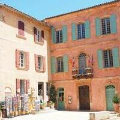
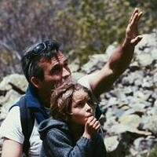
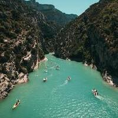
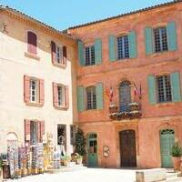
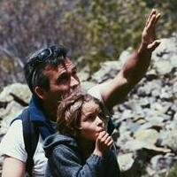
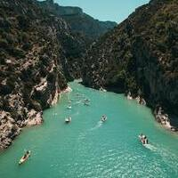
 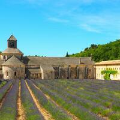
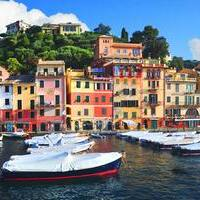
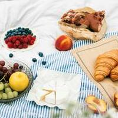
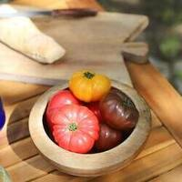
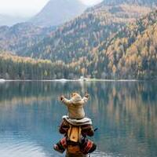
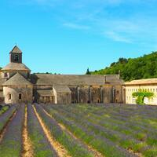
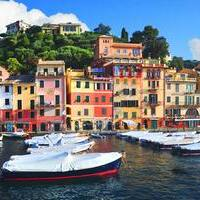
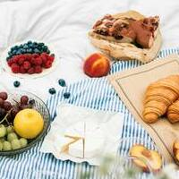
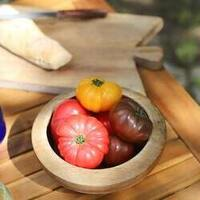
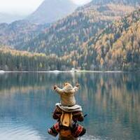